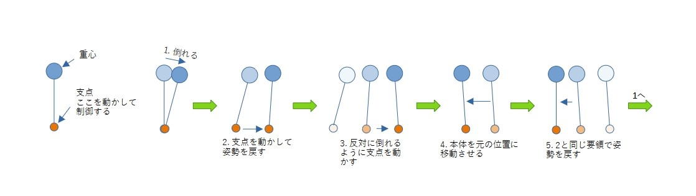
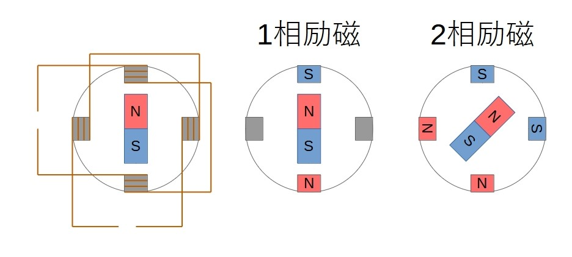
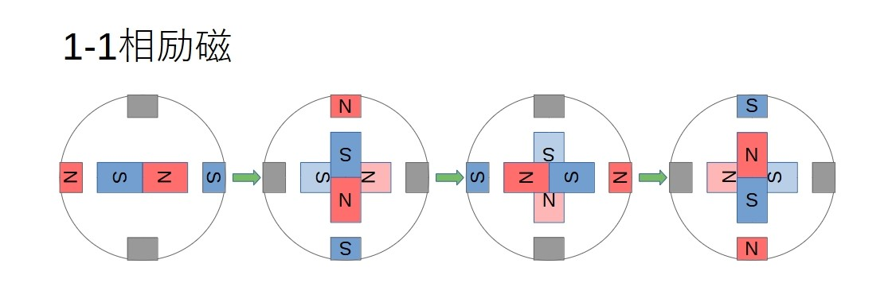
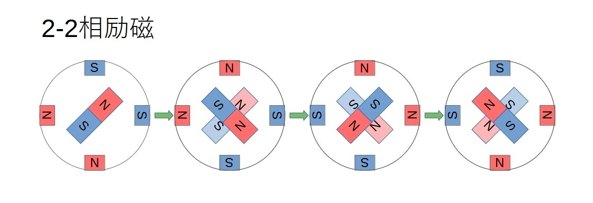
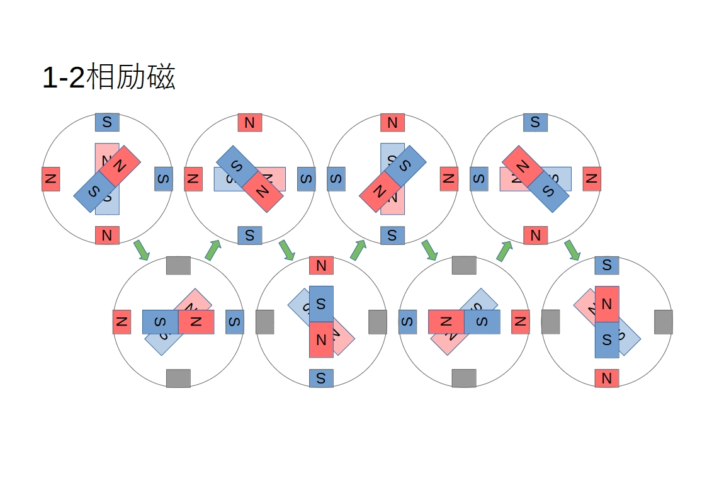
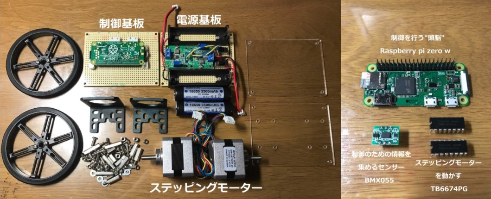
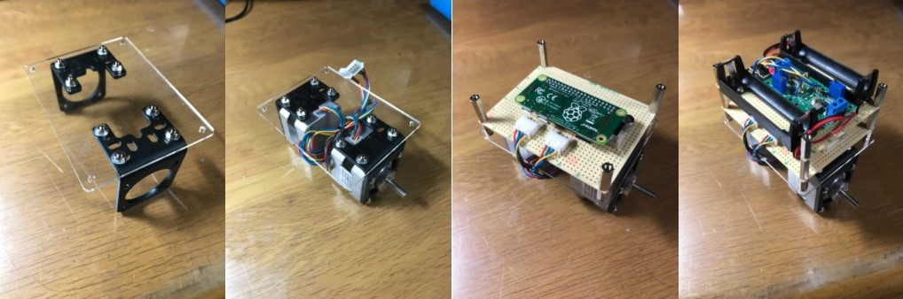
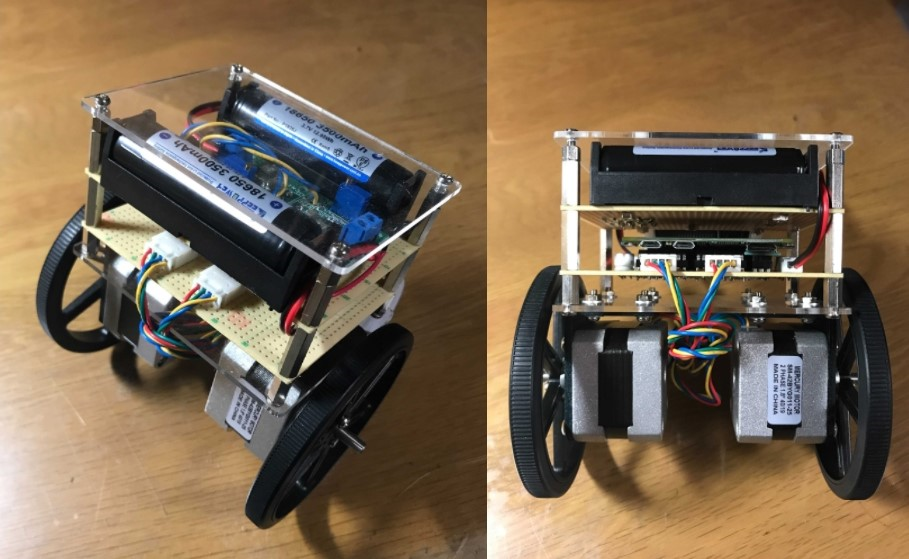

ステッピングモーターで作る倒立振子
2021/4/1

なんとなく、ステッピングモーター使って倒立振子作ったら面白いんじゃね？ ということでステッピングモーターを使った倒立振子を作ってみました。 身も蓋もなく言うと好奇心です
目次
- 倒立振子（とうりつしんし）とは？
- ステッピングモーターとは？
- 筐体製作
- 制御プログラム
- 実際の動作
- まとめ
倒立振子（とうりつしんし）とは？
その名の通り、振り子を逆さにしたものです。 それを倒れないように制御するのが倒立振子です。 傘を手のひらに乗せて倒れないようにするあれです
ステッピングモーターとは？
特殊なモーターで回転の角度を精密に制御できるモーターです。 また低速回転時でも高いトルクを出せるのも特徴です
中央の磁石を2相ある電磁石のうち1相だけを励磁する1相励磁、2相を励磁する2相励磁を組み合わせて回転させます
また組み合わせ方によっていろいろな回転方法があります
まず1-1相励磁、1相励磁のみで回転させる方法です
次に2-2相励磁、2相励磁のみで回転させます
最後に1-2相励磁、1-1相励磁と2-2相励磁を組み合わせたようなもので、1-1相励磁、2-2-相励磁に比べてより細かい制御ができます
今回は2-2相励磁を使いました
筐体製作
今回活躍していただく部品たちです
制御基板には、制御を行う「Raspberry pi zero w」、9軸センサー「BMX055」、ステッピングモータードライバー「TB6674PG」が載っています
穴をあけたアクリル板にモーターを取り付けて、基盤を積み重ねて、
そして出来上がったものがこちら
制御プログラム
プログラミング言語はRaspberry piと相性のが良く、参考文献も多い「Python」を用いました。プログラムは現在進行形で改良中です
ソースコードはこちらコーディングも自己流でクソみたいなコードかもしれませんがご容赦ください。もちろんgithubも初心者です
実際の動作
倒立振子の実際の動作です。キーボード入力で操作してます
まとめ
倒立振子を安定して倒立、移動操作をすることができました。製作前に倒立振子の制御方法を考えるために簡単なモデリングと制御のシミュレーションとかも行っていたのですがそれはまた別の記事で紹介すると思います。たぶん、、、では/